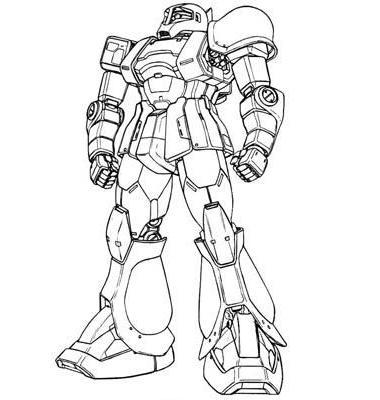

| MS-05B Zaku I Early General Purpose Zeon Duchy Mobile Suit |
|
|  | |
General and Technical Data |
|
|
Model number: MS-05B Code name: Zaku I Unit type: mass production mobile suit Operator: Zeon Duchy Dimensions: head height 17.5 meters Weight: empty 50.3 metric tons; max gross 65.0 metric tons Construction: super high-tensile steel Powerplant: Minovsky type ultracompact fusion reactor, output rated at 899 kW Propulsion: rocket thrusters: 2 x 29500 kg, 2 x 850 kg Performance: thruster acceleration 0.63 G; maximum ground running speed 65 km/h Equipment and design features: sensors, range 2900 meters Optional fixed armaments: "puncher" shield, mounts 3 x spike, hand-carried in use Optional hand armaments: 105mm machinegun, drum-fed, 100 rounds per drum; heat hawk, battery powered; 280mm Zaku bazooka, 4 round magazine; 3x grenade Magnetic Storage Racks: 3, primary rack on backpack, one additional rack on either hip. Legs can additionally mount 3-tube missile launchers or panzer fausts. |
|
| Technical and Historical Notes | |
|
During the early years of the Zeon Duchy it became apparent that a war of independance against the Earth Federation would require a new weapons platform to fight the Federation's massive war machine. MIP's X1 space fighter was killed off in favor of a humanoid design, which seemed to be the ideal platform for a high-maneuverability unit on both space and land. The fourth design, the MS-04, was the first one to equip a Minovsky ultracompact reactor, and the MS-05 was the first to carry the famous Zaku name.
The MS-05A Zaku I served as the Zeon Duchy's security force during the prewar years leading up to 0079. It was also the standard trainer mobile suit, and continues to do so today. However, by the time war erupted on January 1st, enough advances had been made to warrant a new frontline mobile suit, the MS-06 Zaku II, which would spawn numerous variants. The original MS-05A Zaku Is were relegated to utility work, and also to administer the deadly G3 gas to targeted space colonies during Operation British. After the end of the Lourm Campaign, some of the MS-05A's were converted into combat-ready MS-05B's. Originally intended for reserves, these older Zakus eventually found their way to the frontlines via various means. The MS-05's primitive initial weaponry was upgraded with the Zaku II's, and supplementary armor, coupled with a few additional thrusters put it at a similar level to the newer MS-06's. However, it retained its hand-carried version of the Zaku's shoulder shield, and was always known for having a slightly faster response time, making it somewhat more popular with older pilots (for instance, the Space Assault Force's "Blue Giant" Captain Ramba Ral).
Now that the war has been going on for some time, many Zaku I's have been stolen, sold to the Riah Republic or JDEG, or have otherwise found their way to the black market. This is one of the most commonly used mobile suits by Rogue agents in 0079.
|
 RPG quick stats sheet
RPG quick stats sheet | Weapons and Features | |
|


Zaku I Cockpit |
|